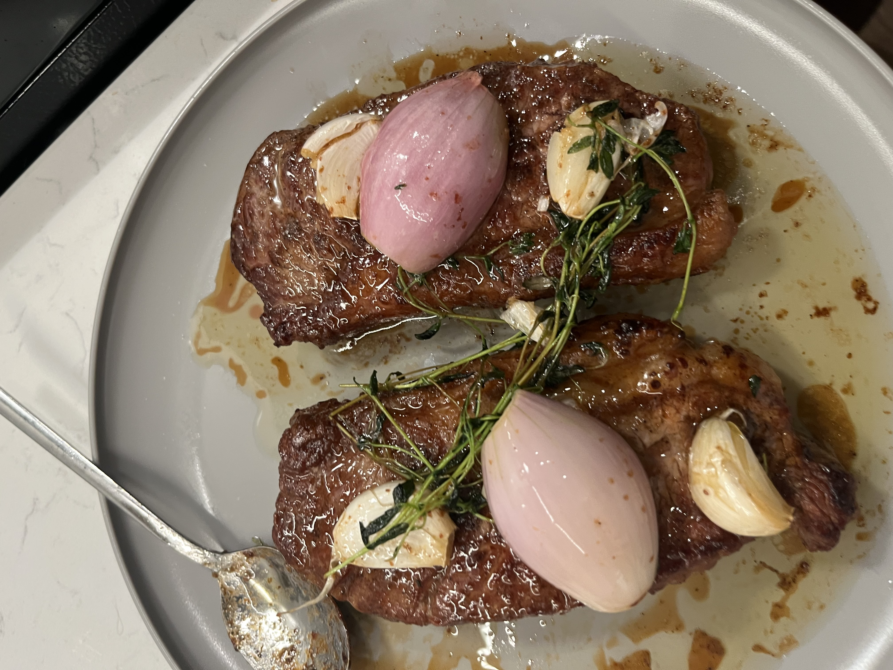
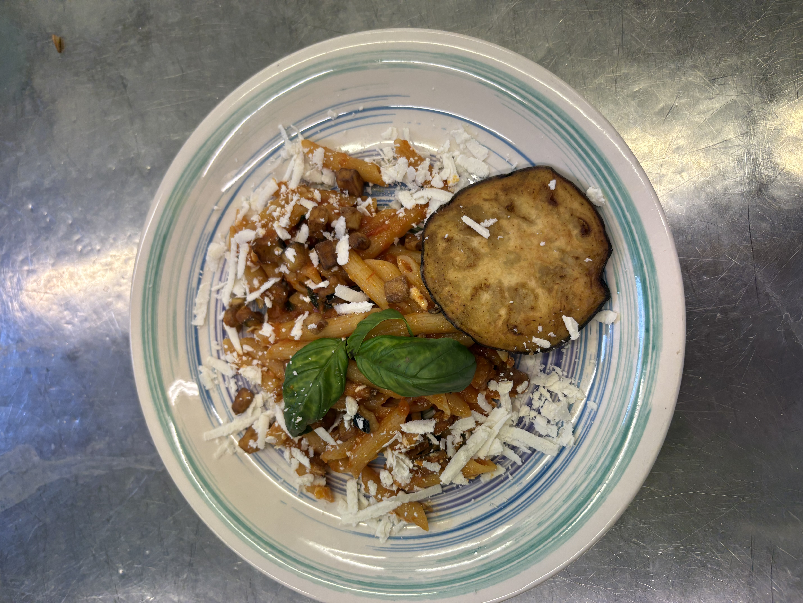

How and What I Cook
Most of what I know about cooking came from repetition. I made the same dishes over and over again, understanding where I went wrong until I understood why they worked, and then I started being able to cook things without thinking too much, just off intuition. These days I rarely follow a recipe, and I just use recipes for inspiration, and once I have a starting point, I adjust based on what I have and want.
The cuisines I tend to lean on include Italian, Mediterranean, Mexican, Thai, and Indian. I am ethnically Indian, so Indian cuisine is my absolute favorite to eat, but Indian dishes are extremely complex so I don't make them as frequently. I definitely tend to lean towards Italian and Mexican most often due to their simplicity of ingredients and process. Though, I will say, once you understand what flavors work together, and the pattern of making dishes, the world's your oyster.
The images on this page include some of my most memorable dishes alongside some fun things I've done in the kitchen. Below are the habits I've used to improve my cooking the most along with a chart of what I actually end up cooking most of the time.



Kitchen habits that made me a better cook
- Learn good knife skills. Cutting vegetables efficiently not only saves you so much time in the kitchen, but it also might save you from chopping off your finger.
- Season in layers, a little at each stage, instead of all at the beginning or end.
- Learn how to feel for a pan's temperature and control heat. A pan that's too hot or too cold can make or break a dish, especially when it comes to meats.
- Taste constantly and adjust. Practicing this will help develop your pallet and intuition for what flavors work together and which ones don't.
- Try your best to use high quality ingredients. A dish's maximum potential is only as great as the quality of the ingredients.
What I've Made for Dinner in the Past 2 Months, by Cuisine
Approximate number of times I cooked each cuisine over the past few months. Hover a bar to highlight it.